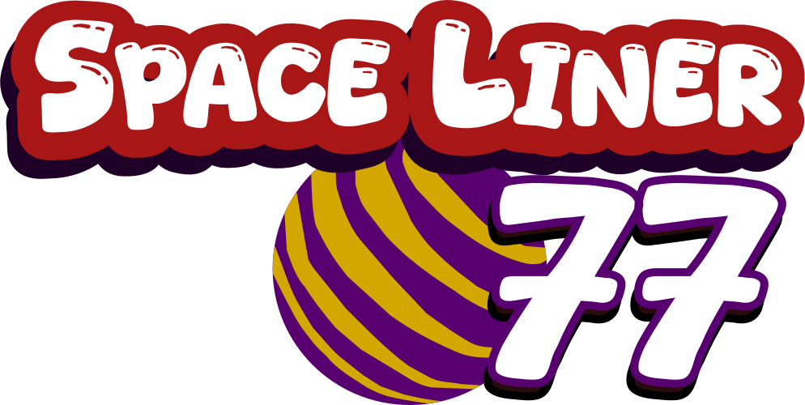

Space Liner 77

A Cozy Chaos Spaceship Simulator — Demo Available Now
You are a slightly overwhelmed spaceship captain transporting quirky passengers between spaceports.
Cook meals, repair worn-out facilities, and clean up after your guests while trying to keep everyone happy
until the next stop. Your passengers have minds of their own, and one captain can only do so much at once.
Life aboard Space Liner 77
- Passengers with personality: Learn what your guests like to eat, keep an eye on their needs,
and discover facts about them in your logbook. Leave those needs unattended and you might find yourself
chasing Barrba’s escaped Martian opossum or dealing with Paul’s boombox-fueled dance party.
- One captain, plenty to do: Decide what needs attention first as hungry passengers,
broken facilities, and a messy ship compete for your time. Pause to plan your next move or change the
game speed to suit the trip.
- Make the next trip a little easier: Spend coins at the spaceport on better facilities,
extra passenger capacity, and faster tools and shoes for the captain. Hire services to take care of
unfinished cleaning and repairs before departure.
- Build your reputation: Complete captain and passenger challenges to earn likes
and unlock more upgrades. Taking on more passengers brings more company—and more demands to juggle.
See the ship in action


"I can't control everything… but I can keep things from collapsing."
Space Liner 77 is still in development. Try the demo and let me know how your trip went!
You can follow the latest changes in the weekly devlogs.
The Arcade Graveyard
Every successful game is built on a foundation of weird prototypes and intense weekend game jams. This is my
digital cabinet of experiments.
Head over to my itch.io profile to play through past builds, including:
- Scaly and the Escalator - Meet the customer capybaras and cats before they boarded Space
Liner 77.
- Fret Cemetery - Home of the original lazy sleeping ghost.
- Don's Curse - Where Naldo first perfected his idle soccer animations.
Expect rough edges, experimental mechanics, and historical game jam pieces that paved the way for my current
work.
About
Rafael Cortez Sanchez (RAFAISKA)
I am a Backend Software Engineer with more than six years of experience building reliable backend
systems, REST APIs, and distributed applications. By day, I work on billing systems and cloud infrastructure
in Linux-based environments. By night, I apply those same engineering principles to indie game development.
My academic research focused on Neural Architecture Search, and early in my career, I built complex traffic
control simulations. Because of that background, I don't see games as just graphics—I see them as real-time
simulation engines.
I build my games with the Godot Engine, leveraging its modular, object-oriented design to
create robust state machines and autonomous agent behaviors. When I am not optimizing data pipelines, I am
figuring out how to stop simulated alien passengers from rioting over space burgers because of a bottleneck in a
spaceship's resource queue.
Besides coding, I also make music and pixel art for my games.
Music
I started taking piano lessons when I was 14, and as soon as I could read my first sheet music, I also started
putting together MIDI files with Anvil Studio. These days, I prefer
using trackers such as MilkyTracker to make music inspired by the classic
Game Boy. Trackers make that setup easier: just 4 channels (3 square waves + 1 noise), minimal samples, and
simple effects.
Pixel art
Unlike music, I didn't study art for very long. I took some drawing classes a long time ago, and there are still a few
pieces from that time on my long-forgotten DeviantArt profile. I
really enjoy drawing by hand, but there is never enough time to practice it.
I used to love drawing when I was a kid, so when I first discovered MS Paint on my father's i486 PC, I also became
interested in creating low-resolution digital art. I rediscovered this passion recently, when I was
forced to make art for my games. Pixel art seemed like an easier option for someone without formal education in art
fundamentals, but I was surprised by how hard it is to express yourself with just a small bunch of pixels and
colors. I've been learning a lot since then.
My weapon of choice for pixel art is Aseprite.
Favorite games / game series
- Rune Factory
- RimWorld
- Legend of Zelda
- Metroid
- Project Zomboid
- Two Point games (Hospital, Campus, Museum)
- Fallout
- Tropico
- Etrian Odyssey
- The Sims